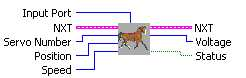
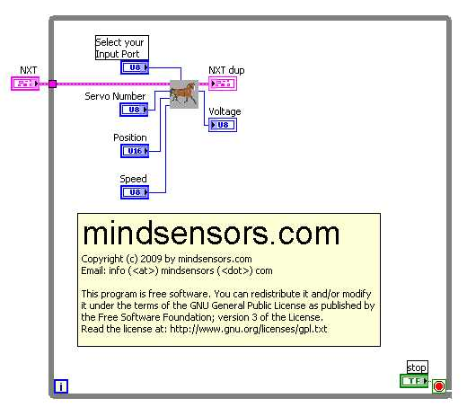

NXTServo Remote
NXTServo allows you to control up to 8 RC servos using NXT.
For most RC servo motors, neutral position is 1500 ms. (Servo position
units are in milli-seconds).
For RC servos with 180 degree swing, the position ranges from 500 ms to
2500 ms.

Inputs
Input Port
- This is where you input the Input
Port your NXTServo is
attached to.
Servo Number-Select which servo you would like to control. (1-8)
Position-Select the position in ms of the Servo.
Speed-Select the speed of the servo.
Outputs
Voltage- Read the Voltage
Sample Program

Sample located at
..\mindsesnors.com
LVHS\mindsensors.com Sample Programs\NXTServo-SP\NXTServo-Remote
Discuss Your Ideas>>